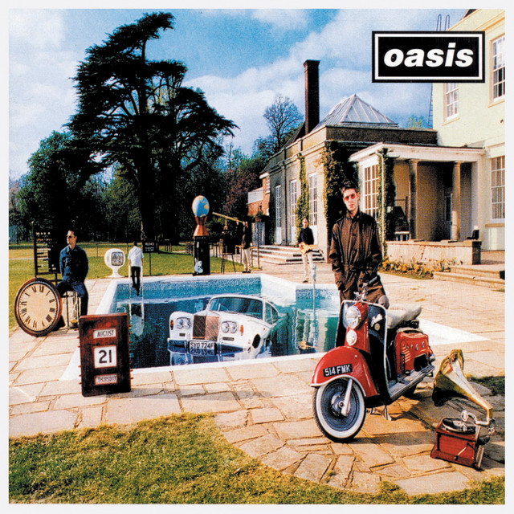

Cargando letra...
Stand by Me es una canción de Oasis lanzada en 1997 como parte del álbum Be Here Now. Su versión, que rinde homenaje al clásico de Ben E. King, destaca por la intensidad y emoción que caracteriza a la banda.
Historia de la Canción
Inspirada en el famoso tema de Ben E. King, la interpretación de Oasis aporta un toque único y melancólico. Grabada en medio de la euforia creativa de los años 90, esta versión refleja la evolución musical de la banda y su capacidad para reinventar clásicos.
Curiosidades
- La canción fue grabada en un solo día, capturando la energía y espontaneidad de la banda.
- La versión de Oasis combina elementos del rock británico con matices soul, dándole un aire fresco al clásico.
- Algunos críticos destacan esta interpretación como una de las más auténticas y apasionadas del grupo.
Créditos
Composición: Oasis
Producción: Oasis y productores invitados
lbum: Be Here Now (1997)